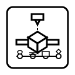
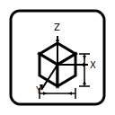
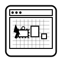

Make Ideas Tangible
Sparkle 3D Printing Trial Lesson
2 hours • Hands-on • Beginner-friendly
What we'll do
- Design using TinkerCAD
- Slice with Bambu Studio
- Demo Print using Bambolab A1

House Rules
- Safety first — 3D Printers are not toys
- Be curious — Ask questions
- Iterate fast — Do first, optimise later
Learning Objectives
By the end, learners can…
- Understand 3D printing process end-to-end
- Understand basic concepts of CAD
- Perform basic operations in TinkerCAD

End-to-End Workflow of 3D Printing
1) 3D Design
CAD (exact) or Sculpt (artistic)

2) Slicing
Layer height, infill, supports

3) Printing
Let the 3D printer do the magic

4) Post Processing
Support removal, sanding, cure/paint

TinkerCAD — Your First Design
Task: Design your own name tag
- Basic Shapes
- Translation
- Scale
- Rotation
- Group / Ungroup
- Hole
- Text Tool
- Export STL

Design Earrings in TinkerCAD
Task: Design your own Earring
Steps
- Orthographic vs Perspective view

- Sketching & Drawing

Slicing + Demo Print
- Use Bambu Studio
- Send to BambuLab A1

3D Printing Limitations (FDM)
- Must use thermoplastic
- Visible layer lines
- Cannot oppose gravity
- Thermal expansion